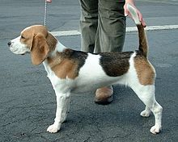

The Beagle Breed
The beagle is a breed of small hound that is similar in appearance to the much larger foxhound.
Read More

Interesting Trivia About Beagles
Origin:
Beagles were originally bred as hunting dogs in Great Britain.
Popularity:
Beagles are one of the most popular breeds in the United States.
Smell:
Beagles have an incredible sense of smell, which makes them great at tracking scents.
Barks:
Beagles are known for their loud barking, which they use to communicate with their owners and other dogs.
Size:
Beagles are considered a small to medium-sized breed, typically weighing between 20-30 pounds.